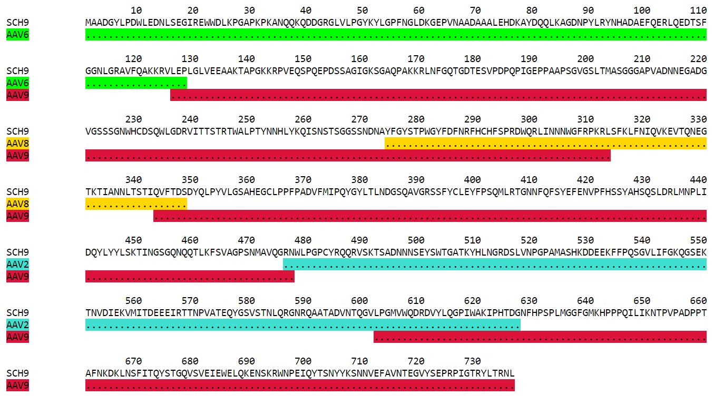
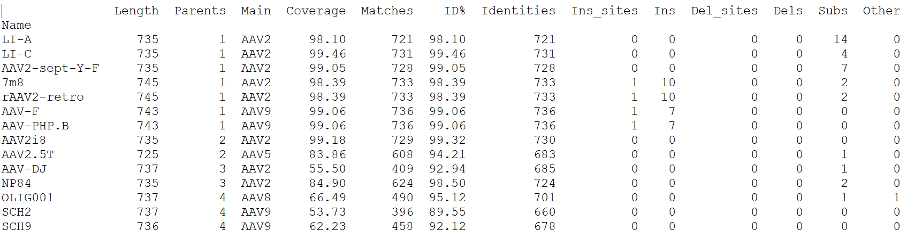
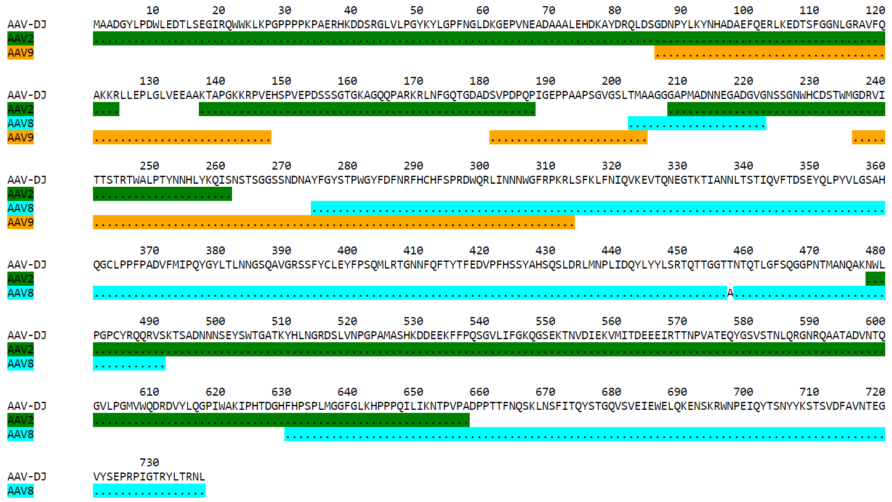

Overview¶
Parent-map analyzes protein or DNA sequences which are derived from one or multiple parent sequences, and shows parental contributions as well as differences from relevant parents.
Originally developed to analyze capsid protein sequences obtained by directed evolution, Parent-map can be used in any case where variant sequences are to be compared to parent sequences from which they are derived. Parent-map detects sequence shuffling as well as substitutions, insertions and deletions.
Parent-map takes two FASTA files as input and generates four text files and one html file as output.
The first input file contains the variant sequences to be analyzed, in either single- or multi-line FASTA format. Sequences are read into memory one at a time, so there is no limit to their number. They don’t need to be related, and can be derived from any combination of parental libraries.
The other input file contains the parental sequences. FASTA format is only required if more than one parent is present. All parental sequences are loaded into memory together, as their number is limited.
The output files have the following endings in their name: -stats.txt (statistics), -par.txt (parental contributions), -par.html (parental contributions, colorized html file), -def.txt (sequence definitions) and -aln.txt (alignments).
The -stats.txt file is a simple table showing an overview of the variant sequences main features. Sequences are sorted by the number of contributing parents, then by the parent name.
The -par.txt file is an alignment of each variant against all its contributing parents. This file is particularly useful for variants derived from shuffled libraries, as it maps the most likely parental contributions. Contributing parental fragments are displayed using an identity character (which can be customized). Obviously, in the case of multiple parents, the combination of fragments shown is only one among a very large number of possible combinations. However, the solution shown has the largest fragment lengths, the smallest number of fragments and the smallest number of parents.
The -par.html file is a colorized version of the -par.txt file, with each parent represented with a different color.
The -def.txt file gives a formal definition of each variant sequence in relation to its parent(s), in a table format. It’s a blueprint allowing to reconstruct the variant sequences from a minimal set of instructions.
The -aln file aligns variants under their main parent. As opposed to the -par.txt file where there is an alignment per variant, here there is an alignment per parent. First, alignments for single parent sequences are shown, then alignments for multi-parent sequences if they exist, against their main parent. For legibility, only regions in which at least one of the variants differ from the parent are shown. Each region is numbered according to its position in the parental sequence.
Parent-map is a platform-independent Python 3 script available as a bioconda package, as well as a Windows executable. It can be run in command-line mode inside a terminal or in a graphic user interface. Starting it without arguments will launch the graphic interface, while adding any argument will run it as a command-line program. The Windows version can also do both, with the only difference that it will not display anything in command-line mode.
- Source code:
- Python package:
- Bioconda recipe and package:
- Windows executable:
Installation¶
The recommended method is to install parent-map as a bioconda package under a Python 3 conda environment. If you don’t have such environment, first install Miniconda3 from here (exists for Linux, MacOSX and Windows): https://docs.conda.io/en/latest/miniconda.html
To install the parent-map bioconda package, at the conda prompt type:
conda install -c bioconda parent-map
Windows users who prefer not to use a conda environment can install the Windows executable version of parent-map from here: https://sourceforge.net/projects/parent-map/
Usage¶
To run parent-map from a Python 3 conda environment, type:
python -m parent-map
This will launch the graphic interface (same as if launching the Windows version).
To run in command-line mode, add arguments. For example:
python -m parent-map -v
python -m parent-map -h
In the first example, the version will be displayed. The second example will show a help message.
Typical usage:
python -m parent-map variant_file parent_file optional_arguments
where variant_file is the name of the file containing the variant sequences, parent_file is the name of the file containing the parental sequences, and optional_arguments can be any combination of the optional arguments described in detail below.
Real-life example:
python -m parent-map example_variants.fasta example_parents.fasta -o test
This will result in the following output:
Sequence name 'AAV2-sept-Y-F' replaced with 'S16'
Parental maps saved into file: test-par.txt
Stats saved into file: test-stats.txt
Sequence definitions saved into file: test-def.txt
Alignments saved into file: test-aln.txt
Colorized version of parental map file saved into file: test-par.html
Note that the prefix ‘test’ entered with the -o (output) argument became the prefix of the 4 output files. Also note that the sequence name change (first line) can be avoided by using the -s argument (maximum name size) followed by the value 13 (the sequence name ‘AAV2-sept-Y-F’ is 13 character long, while the default value for -s is 12).
Parent-map can also bypass the sequence analysis and just colorize an existing -par.txt file into a -par.html file. This is useful when the user is not satisfied with the default colors and wants to try different color schemes. In this case, the -C argument is used followed by the name of the -par.txt file. Also, the -p argument must be used followed by a list of parent color pairs. Example:
python -m parent-map -d -C test-par.txt -p 'AAV2 turquoise, AAV3B tomato, AAV5 lavender, AAV8 gold, AAV9 crimson, AAV6 lime'
The following output will be generated, while the newly created html file is automatically displayed (thanks to option -d) in the default web browser:
Colorized version of parental map file saved into file: test-par.html
A portion of the generated html file is shown here:
Arguments¶
The same parameters are available in both modes (graphic and command-line) but some default values might differ.
Version: -v
Whenever the argument -v is used, parent-map will only display the program version and exit, no matter whether other arguments are present or not. In graphic mode, version information is under ‘About’ in the main menu.
Help: -h
Whenever the -h argument is used, parent-map will only display the help message and exit, no matter whether other arguments are present or not (except -v). In graphic mode, the ‘Help’ menu item links to the documentation web page.
Variants: file name or path to file name
The variant file must be in FASTA format, no matter how many sequences are present. In graphic mode, a Browse button allows to select the file from any directory.
Parents: file name or path to file name
The parent file must be in FASTA format unless a single parent is present, in which case raw sequence (with no name) is fine. Again, a Browse button is there in graphic mode. It is possible to change the position numbering by adding a number after the sequence name (separated by a blank space). That number will then become the position number of the first character in the sequence. If no umber is provided, the first character will be considered to be in position 1. This is useful when standard numberings need to be used but only a region of the gene is sequenced.
Output: -o
The output files will be saved in the same directory as the variant file. If this argument is used, the prefix entered will be the part of the file names before the -stats.tx, -par.txt, -def.txt and -aln.txt endings. If this argument is not used, a prefix will be automatically generated from the variants and parents file names, as well as some arguments and their values.
MinFragLen: -m
This is the minimum fragment length used to map variant regions against parental sequences. Default values are 6 for protein sequences and 18 for DNA sequences (sequences with non [A, T, G, C] characters are automatically defined as ‘protein’). It is recommended to keep the default values.
MinOverlap: -V
This is the minimum overlap length in the case of sequences produced by shuffling parental sequences. Default values are 2 for protein and 6 for DNA. It can be useful to decrease the value in cases where variants from multiple parents are not produced by overlapping randomly digested fragments, but rather by rationally designed combinations.
MaxNameSize: -s
Maximum length of sequence names before the name is replaced with a shorter generic name (‘S’ followed by a number corresponding to the sequence position in the FASTA file). Default value is 12.
SeqChars: -c
Number of sequence characters per line in alignments (-par.txt and -aln.txt files). Default value is 120.
LowerCase: -l
By default, all sequences are displayed in upper case. Use the -l argument to display sequences in lower case instead.
VRSides: -e
Number of characters to be included each side of variable regions in the -aln.txt file. Note that increasing the value results in neighboring regions merging. Modifying this value only alters the esthetics of the displayed alignments. Default value is 1.
Overwrite: -f
By default, if an output file with the same name already exists, parent-map exits with a warning to either change the output prefix or to use the -f argument. The -f argument forces overwriting of existing files with identical names without warning.
Symbols: -S
Symbols for identity (default: ‘.’) and gap (default: ‘-‘) in -par.txt and -aln.txt files. Symbols should be exactly 2 non identical, non alphabetical and non blank characters.
DisplayResults: -d
The output files are automatically displayed in a web browser by default in graphic mode only. Use the -d argument to automatically display in command-line mode. The option might not work, depending on the user’s operating system and browser configuration. The txt files might be displayed in the default application for text files instead, if the browser is unresponsive, or might not display at all. In any case, the 5 output files are always saved in the same directory as the input files, and can be opened at any time using any appropriate displaying application (a web browser is recommended). Note that if a word processor is used, a monospaced font (such as Courier New for example) needs to be applied to the contents for proper display. Note that even when using a monospaced font, Microsoft Word uses shorter blank spaces, which distorts the display. In this case, replace all blank spaces in the document with a monospaced blank space created by pressing the space bar while simultaneously holding both Shift and Ctrl keys.
Colors: -p
When parent-map is used to analyze sequences (using the 2 input files), the -p (palette) argument is unnecessary (default colors are used) unless the user wishes to apply a specific color scheme, in which case -p must be followed by a list of parent color pairs in the following format (pairs separated by commas, blank space between parent and color, list surrounded by single or double quotes):
-p 'parent1 color1, parent2 color2, parent2 color3,...'Parent names must be exactly as they appear in the -par.txt file, including the case. Color names are case-insensitive and must be standard html colors, such as shown on this page: http://www.html-color-names.com/color-chart.php
When sequence analysis is bypassed and parent-map is only used to colorize an existing -par.txt file (using the -C argument followed by the file name), the -p argument is required.
ColorizeOnly: -C
This option is to bypass the sequence analysis and to only colorize an existing -par.txt file. The file name (or path) needs to be entered after -C.
Output files¶
Statistics¶
The -stats.txt file shows a summary of the variant sequences main features, in table format. Sequences are sorted by number of parental sequences, then by main parent name, then by the number of insertion sites. Description of the table columns:
- Name:
Variant sequence name as appearing in the variant FASTA file, or as a shorter name made of ‘S’ followed by the sequence number in the original file in case the original name is longer than the default maximum name length.
- Length:
Sequence lengths (number of amino acid residues for protein sequences, number of nucleotides for DNA sequences).
- Parents:
Number of parental sequences detected as having contributed to the variant sequence.
- Main:
Name of the main contributing parental sequence (the parent covering the largest area of the variant, in case of multiple parents).
- Coverage:
% of the variant sequence covered by the main parent. Note that this is not the same as global similarity to the main parent sequence in the case of multiple parents. In that case, it’s about the parts of the variant sequence that are not already covered by other parents. It’s actually the % of positions identical to the main parent as displayed in the -par.txt file.
- Matches:
Number of sequence positions matched (as opposed to a % as in the previous column).
- ID%:
Global similarity of the variant sequence compared to the main parent sequence (% of identical positions). In the case of a single parent, this is identical to coverage (6th column). However, in the case of multiple parents, this is the % identity with the parent along the whole variant sequence (and not just the part covered by that parent and not by other parents as in column 6).
- Identities:
Global similarity as the number of identical variant sequence positions compared with the main parent.
- Ins_sites:
Number of sites in the variant sequence that have an insertion compared with the main parent.
- Ins:
Total number of nucleotide or amino acid insertions in the whole variant sequence.
- Del_sites:
Number of sites in the variant sequence that have a deletion compared with the main parent.
- Dels:
Total number of nucleotide or amino acid deletions in the whole variant sequence.
- Subs:
Total number of substitutions in the variant sequence compared with the main parent.
- Other:
Number of sequence positions that could not be matched to any parent and could not be considered as a variation of one particular parent.
Example of a -stats.txt file:
Parental mapping¶
In the -par.txt file, each variant complete sequence is displayed along its contributing parental fragments. The parental mapping is simplified as much as possible, so that the variant is completely described using as few parents as possible and as few fragments as possible. Only the necessary parents are shown. If a fragment can be mapped equally to more than one parent, the parent that has the highest overall coverage is chosen. Identities are displayed in the parent lines using an identity symbol (‘.’ by default). If a mismatch occurs between 2 fragments mapped to the same parents or at a sequence end, it is considered a variation of the parent next to it and displayed as the parent sequence (substitution) or using the gap symbol (‘-‘ by default) in the parent line for insertions or in the variant line for deletions. The -par.txt file is most useful for variant sequences selected from shuffled libraries. Two files are generated: a black and white text file (name ending with -par.txt) and a colorized html version of the same file (name ending with -par.html). In the html file, each parent name and its corresponding identity fragments are colorized using a different color (whenever possible). The default color scheme uses 12 different colors. If the number of parents in the file is greater than 12, the same set of 12 colors is used on the 12 next parents and so on. If the user wishes to apply specific colors, the -p argument needs to be used followed by a list of parent color pairs, either at the time of the sequence analysis or later with the -C argument to specify the -par.txt file to be colorized again.
Example of a -par.txt file (showing AAV-DJ only):
Parental composition of sequence AAV-DJ
10 20 30 40 50 60 70 80 90 100 110
AAV-DJ MAADGYLPDWLEDTLSEGIRQWWKLKPGPPPPKPAERHKDDSRGLVLPGYKYLGPFNGLDKGEPVNEADAAALEHDKAYDRQLDSGDNPYLKYNHADAEFQERLKEDTSF
AAV2 ..............................................................................................................
AAV8
AAV9 .........................
120 130 140 150 160 170 180 190 200 210 220
AAV-DJ GGNLGRAVFQAKKRLLEPLGLVEEAAKTAPGKKRPVEHSPVEPDSSSGTGKAGQQPARKRLNFGQTGDADSVPDPQPIGEPPAAPSGVGSLTMAAGGGAPMADNNEGADG
AAV2 .............. ................................................... .............
AAV8 ...................
AAV9 ..................................... ........................
230 240 250 260 270 280 290 300 310 320 330
AAV-DJ VGNSSGNWHCDSTWMGDRVITTSTRTWALPTYNNHLYKQISNSTSGGSSNDNAYFGYSTPWGYFDFNRFHCHFSPRDWQRLINNNWGFRPKRLSFKLFNIQVKEVTQNEG
AAV2 .........................................
AAV8 .. .........................................................
AAV9 ..............................................................................
340 350 360 370 380 390 400 410 420 430 440
AAV-DJ TKTIANNLTSTIQVFTDSEYQLPYVLGSAHQGCLPPFPADVFMIPQYGYLTLNNGSQAVGRSSFYCLEYFPSQMLRTGNNFQFTYTFEDVPFHSSYAHSQSLDRLMNPLI
AAV2
AAV8 ..............................................................................................................
450 460 470 480 490 500 510 520 530 540 550
AAV-DJ DQYLYYLSRTQTTGGTTNTQTLGFSQGGPNTMANQAKNWLPGPCYRQQRVSKTSADNNNSEYSWTGATKYHLNGRDSLVNPGPAMASHKDDEEKFFPQSGVLIFGKQGSE
AAV2 .........................................................................
AAV8 ................A..................................
560 570 580 590 600 610 620 630 640 650 660
AAV-DJ KTNVDIEKVMITDEEEIRTTNPVATEQYGSVSTNLQRGNRQAATADVNTQGVLPGMVWQDRDVYLQGPIWAKIPHTDGHFHPSPLMGGFGLKHPPPQILIKNTPVPADPP
AAV2 ...........................................................................................................
AAV8 ...............................
670 680 690 700 710 720 730
AAV-DJ TTFNQSKLNSFITQYSTGQVSVEIEWELQKENSKRWNPEIQYTSNYYKSTSVDFAVNTEGVYSEPRPIGTRYLTRNL
AAV8 .............................................................................
Same map from the corresponding -par.html file, using default colors:
Sequence definitions¶
The -def.txt file shows comprehensive definitions of variant sequences in terms of their parent(s), using as few instructions as possible. This file is most useful for designing synthesis, PCR and assembly strategies for the reconstruction of the variants from the parents. For each variant, a 5-column table is displayed:
- Variant region:
Each region is defined as a range (ex. 86-147), a number (ex. 457) or two consecutive numbers separated by a slash (ex. 233/234). In the first case, the numbers represent sequence positions, and both are included in the region (ex. the 1-10 region includes all 10 first positions in the sequence). In the second case, the region is a single position. It the third case, the region is the empty interval between two consecutive positions, and shows the presence of a deletion.
- Parent/feature:
In the case of sequence identity with a parent, the parent name is displayed. Otherwise, the name of the feature (substitution, insertion, deletion) is displayed. Unmatched regions that can not be assigned to a parent are shown as “unmatched”.
- Parent region:
The corresponding region in the parent sequence. For substitution, insertions and deletions, the parent is the one surrounding the feature (or next to the feature if the feature is at a sequence end). Position numbering is the one defined in the parental sequence file as explained in parents (first position in the sequence becomes the number next to the sequence name if a number if present).
- Variant sequence:
When a substitution, insertion or unmatched region is present, the region sequence is displayed here.
- Parent sequence:
In the case of substitutions or deletions, the corresponding parental sequence is displayed here.
Here is an example of a -def.txt file:
Variant name: OLIG001
Variant region Parent/feature Parent region Variant sequence Parent sequence``
1-124 AAV2 1-124
86-156 AAV9 86-156
136-178 AAV6 136-178
165-262 AAV9 165-262
234-341 AAV8 235-342
333-373 AAV2 331-371
343-531 AAV8 344-532
532 substitution 533 K E
533-725 AAV8 534-726
726 unmatched H
727-737 AAV6 726-736
Variant name: AAV2i8
Variant region Parent/feature Parent region Variant sequence Parent sequence
1-584 AAV2 1-584
582-590 AAV8 585-593
591-735 AAV2 591-735
Variant name: rAAV2-retro
Variant region Parent/feature Parent region Variant sequence Parent sequence
1-381 AAV2 1-381
382 substitution 382 D N
383-587 AAV2 383-587
588-597 insertion 587/588 LADQDYTKTA
598-717 AAV2 588-707
718 substitution 708 I V
719-745 AAV2 709-735``
Alignments¶
The -aln.txt file consists of two parts: the first concerns sequences derived from a single parent, while the second part is about sequences derived from multiple parents. In each part, variants derived from the same main parents are aligned together against their main parent. Only regions that differ from the parent in any of the variants are shown, and the region position is indicated by a number (numbering is the one defined in the parental sequence file as explained in parents). Sequence identity is shown using the identity symbol (default: ‘.’), gaps are shown using the gap symbol (default: ‘-‘). Insertions are indicated by a gap in the parent sequence, deletions by a gap in the variant sequence. For substitutions, the actual sequence is shown. Increasing the region area (using the -e argument) allows to show more sequence context and to combine neighboring regions. The -aln.txt file is most useful for variants derived from a single parent (such as from insertion or targeted substitution libraries), as it allows to compare variants in discrete regions, which can be much larger in number and size when variants are derived from multiple parents (as in shuffled libraries). Example of -aln.txt file:
Alignment of variant sequences against their main parental sequence - single parent
239 251 262 271 381 443 449 458 491 498 506 587 699 703 707 729
AAV2 VIT TYN SQS HYF NNG YYL NTPSGTT SRLQF TSADN SEYSWTG TKY N----------R QYT NYN SVN RYL
LI-A ... ... .A. ... ... .F. .SEGSL. .S.G. .DGE. .DF.... ... .----------. ... ... ... ...
LI-C ... ... .A. ... ... ... ....... ..... ..... ..F..P. .T. .----------. ... ... ... ...
AAV2-sept-Y-F ... .F. ... .F. ... .F. ....... ..... ..... ..F.... ... .----------. .F. .F. ... .F.
7m8 .T. ... ... ... ... ... ....... ..... ..... ....... ... .LALGETTRPA. ... ... .I. ...
rAAV2-retro ... ... ... ... .D. ... ....... ..... ..... ....... ... .LADQDYTKTA. ... ... .I. ...
588
AAV9 Q-------A
AAV-F .FVVGQSY.
AAV-PHP.B .TLAVPFK.
Alignment of variant sequences against their main parental sequence - multiple parents
124 134 161 167 178 187 197 204 232 261 270 309 326 339 371 409 448 455
AAV2 RVL EPVK KAG ARK DADS PLGQP GLGTNT ATGSG STWMG S-SQS-GAS NHY KRLNF NDGTTT TVQ MVP FTFSY TNTPSG TTQSRLQF
AAV2i8 ... .... ... ... .... ..... ...... ..... ..... .-...-... ... ..... ...... ... ... ..... ...... ........
AAV-DJ .L. .AA. ... ... .... .I.E. .V.SL. .A.G. ..... .N.T.G.S. .A. ...S. .E..K. .I. .I. .Q.T. .Q.TG. .NTQT.G.
NP84 ... .... .T. .K. .SE. ...E. ...... ..... .Q.L. .-...-... ... .K.S. ...... ... ... ..... ...... ........
464 531 584 655 661 704 712
AAV2 QAGASDIRDQSRN EKF QRGNRQAA ANPST FSAAKFAS YNKSVNV FTVDTNG
AAV2i8 ............. ... .QQ.TAP. ..... ........ ....... .......
AAV-DJ .G.PNTMAN.AK. ... ........ .D.P. .NQS.LN. .Y..TS. .A.N.E.
NP84 ............. .E. .G...... ..... ........ ....... .......
1 12 29 33 49 54 59 65 75 101 114 580
AAV5 MSFVDHPP E-EVGEGLREFLGLEAG PKP PNQQHQDQAR YNY PGN DRG NRADEVARE DISYNEQLEAG EKLADD GKA PAT
AAV2.5T .AADGYL. .DTLS..I.QWWK.KP. .P. .AER.K.DS. .K. .F. .K. .E..AA.L. .KA.DR..DS. .R.KE. .R. .T.
13 20 28 66 80 91 104 124 134 147 151 157 162 168 179 188 200 205 211 233 342 532 726
AAV8 DNL REWWAL GAPKPKANQQKQDDGR NAA DQQLQAG LRY LQE RVL EGA EPS QRSP STG KKG ARK DSE PLG GPNT AAG PMA STW TIQ DEE PRP
OLIG001 .T. .Q..K. .P.P..PAERHK..S. .E. .R..DS. .K. .K. .L. .A. .Q. .-E. .S. .T. .K. .T. .I. .SL. .S. .V. .Q. .V. .K. .H.
736
AAV8 RNL
OLIG001 .P.
23 30 37 55 91 104 124 313 326 341 415 448 482 490
AAV9 WAL PQP QHQDNAR PGN LKY LKE RLL LNF TDNNGVK TVQ YEFENV SKTINGSG-QNQQTLKFSVAGPSNMAVQGRNYIP PSY STTVTQN
SCH2 .D. .K. .K..DG. .F. .R. .Q. .V. .S. .Q.E.T. .I. .T..D. .R.NTP..TTT.SR.Q..Q..A.DIRD.S..WL. .C. .K.SAD.
SCH9 .D. .K. .K..DG. .F. .R. .Q. .V. .S. .Q.E.T. .I. ...... ........-......................WL. .C. .K.SAD.
500 514 528 536 547 554 561 566 575
AAV9 EFAWPGASSWAL RNSLMN KEGEDRF PLSGSL GTGRDN DADK TNE IKT ESYGQVATNHQSAQAQAQTGWVQNQGIL
SCH2 .YS.T..TKYH. .D..V. .DD.EK. .Q..V. .SEKT. .IE. .D. .R. .Q..S.S..L.RGNR..A.AD.NT..V.
SCH9 .YS.T..TKYH. .D..V. .DD.EK. .Q..V. .SEKT. .IE. .D. .R. .Q..S.S..L.RGNR..A.AD.NT..V.
Examples¶
In order to explore the functionalities of parent-map, a set of protein sequences of evolved or designed AAV capsid variants described in peer-reviewed articles was assembled, as well as a set of the protein sequences of all wild-type parental AAV capsids from which they are derived. They can be downloaded by clicking on the following links:
Variants SCH2 and SCH9 are derived from a chimeric library combining fragments from AAV2, AAV4, AAV5, AAV6, AAV8 and AAV9. Using default values, parent-map correctly identifies parental contributions from AAV2, AAV6, AAV8 and AAV9 for both variants.
Variant AAV-F derives from an AAV9 peptide insertion library. Parent-map correctly identifies AAV9 as the single parent and detects peptide sequence FVVGQSY insertion between positions 588 and 589.
Variant AAV-DJ derives from a shuffled DNA library made with parental serotypes AAV2, AAV4, AAV5, AAV8 and AAV9. Parent-map correctly identifies parental contributions from AAV2, AAV8 and AAV9, and detects an A to T substitution at position 457 (corresponding to position 458 in parent AAV8).
Variant AAV-PHP.B derives from an AAV9 peptide insertion library. Parent-map correctly identifies AAV9 as the single parent and detects peptide sequence TLAVPFK insertion between positions 588 and 589.
Variant AAV2.5T derives from a capsid library generated by DNA shuffling of parents AAV2 and AAV5 and error-prone PCR. Parent-map correctly identifies parental contributions from AAV2 (VP1-specific N-terminal region) and AAV5 (remainder of the sequence) and an A to T substitution at position 582 (581 in parent AAV5).
Variant 7m8 derives from an AAV2 peptide insertion library. Parent-map correctly identifies AAV2 as the single parent and detects peptide sequence LALGETTRPA insertion between positions 587 and 588 (AAV2 numbering), as well as substitutions I to T at position 240 and V to I at position 718 (708 in AAV2).
Variants LI-A and LI-C derive from a synthetic library based on AAV2 with mutations at targeted positions. Parent-map correctly identifies AAV2 as the single parent, as well as the 14 and 4 substitutions in LI-A and LI-C respectively.
Variant NP84 derives from a shuffled DNA library. Parent-map describes it as combining regions of AAV2, AAV3B and AAV6, as well as having substitutions K to E at 532 and R to G at 585 in the C-terminal AAV2-homolog region.
Variant OLIG001 derives from a shuffled DNA and error-prone PCR library. Parent-map identifies parental contributions from AAV2, AAV6, AV8 and AAV9, as well as a E to K substitution at position 532 (position 533 in relevant parent AAV8) and an unmatched H at position 726 between regions homologous to AAV8 and AAV6.
Variant AAV2i8 is a rationally designed chimeric capsid based on AAV2 in which the receptor footprint region was replaced with corresponding region from AAV8. Parent-map successfully identifies AAV2 and AAV8 parental contributions.
Variant rAAV2-retro derives from an AAV2 peptide insertion and error-prone PCR library. Parent-map correctly identifies AAV2 as the parent, the peptide sequence LADQDYTKTA insertion between positions 587 and 588, as well as the 2 substitutions N to D at position 382 and V to I at position 718 (708 in AAV2).
Variant AAV2-sept-Y-F is a rationally designed multiple mutant of AAV2 combining seven Y to F mutations on its surface. Parent-map correctly identifies AAV2 as the single parent, as well as the 7 Y to F substitutions at positions 252, 272, 444, 500, 700, 704 and 730.